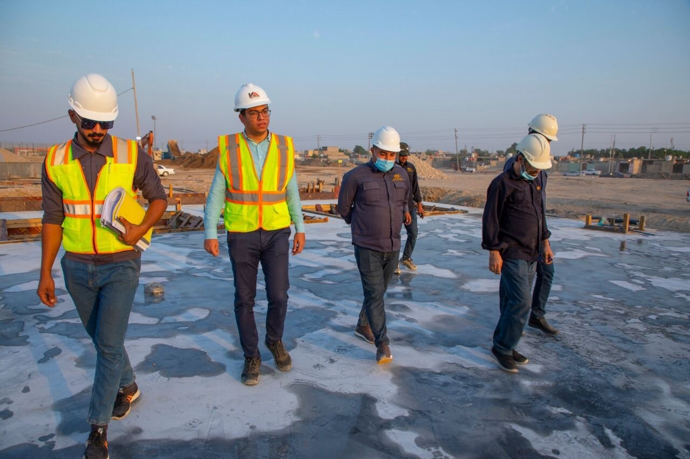
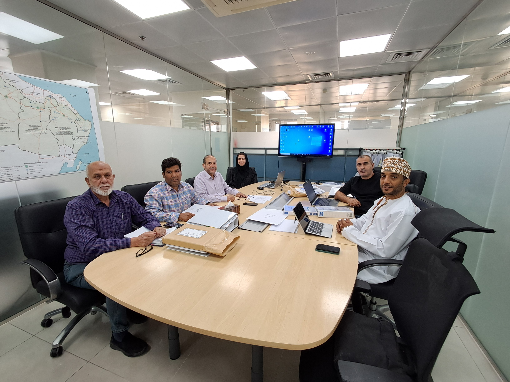

Serious work, capable teams, and a place to build an enduring career.
At K&A, the work we do carries responsibility, and so does the way we do it. We are trusted to take on demanding work, apply professional judgement, and deliver outcomes that stand up to scrutiny from clients, partners, and communities.
That trust has been built over time through technical capability, consistency, and the quality of our people. We work with colleagues who care about getting things right, who take ownership of their work, and who understand the impact of their decisions.
Careers at K&A develop through contribution and experience. We give our people exposure to major projects, access to experienced leaders, and opportunities to build capability over time. Progression reflects readiness and performance, with responsibility increasing as trust is earned.
K&A offers the strength and stability of a well-established organisation alongside the opportunity to be involved in work of real scale and significance. For those who take pride in their profession and value being part of a serious, capable team, K&A offers a place to build a respected and enduring career.
1956
Founded
6,500+
Professionals
30+
Offices worldwide
25+
Nationalities

K&A was founded in 1956. In the decades since, we have designed bridges, planned cities, built water networks, supervised hospitals, and delivered the infrastructure that communities across the Middle East, Africa, and beyond depend on every day.
That longevity matters for one reason: the work we do outlasts us. The road you design will be used for decades. The water system you supervise will serve families who have not yet been born. The building you help deliver will shape a neighbourhood for a generation. Not every engineering role offers that. Ours do.
If you want work that is technically demanding, consequential, and genuinely connected to the places and communities it serves, you are in the right place.

K&A is a firm of specialists who work across disciplines, geographies, and time zones as a matter of course. A water engineer in Beirut may collaborate with a structural specialist in Riyadh and an urban planner in Dubai on the same programme. A construction supervisor on site in Saudi Arabia will work closely with a design team in Egypt.
We do not have a culture of internal competition. We have a culture of collective responsibility. Projects are delivered through teamwork, shared standards, and joint ownership of outcomes. Senior people are accessible because they remain closely connected to the work. Knowledge is shared because strong results depend on it. If you have a better idea, you are expected to raise it.
People who thrive here take the work seriously without taking themselves too seriously. They value learning from colleagues with decades of experience and take pride in seeing something they helped build standing in the landscape.
Progression reflects readiness and performance, with responsibility increasing as trust is earned.
Join as a graduate, intern, or entry-level engineer. Structured onboarding, technical training, and a mentor who has been in your shoes.
Take on real responsibility on complex projects. Gain chartered accreditations, cross-discipline exposure, and early client-facing experience.
Step up as a team lead, project manager, or discipline expert. Many of our leaders grew into these roles from within.
Become a principal, director, or region lead, shaping strategy, opening new offices, or launching new service lines.
Engineers move into project management. Designers move into digital services. We build careers, not silos.
A posting in Dubai today, a secondment in Riyadh next year, a project in Cairo after that. Our scale gives you real geographic mobility.
A meaningful share of our senior leaders started here in entry-level roles. Growing people from within is a core part of how we operate.
Professional accreditations, technical training, and leadership programs, funded and supported as part of your career plan.
Click any section to read more
K&A does not measure success by structures completed. We measure it by whether those structures continue to work, for the cities that depend on them, the clients who commissioned them, and the communities who live alongside them.
In practice, that means we take a long view. We build relationships with clients that span decades, not projects. We stay engaged beyond handover, because handover is not the end of a project's life. It is the beginning.
Our work spans infrastructure, buildings, water, energy, transport, urban planning, project management, and digital services. Across all of it, the question we ask is the same: will this still be working well in thirty years?
K&A expects its people to be accountable for their work, their commitments, and their conduct on site and in the office. We do not manage by hierarchy for its own sake. We manage by outcome.
Our leaders are expected to be visible, available, and honest, to give clear direction and to develop the people around them. That standard applies equally to a team leader on a construction supervision programme and to a geography head running a business unit.
What we do not expect is perfection. We expect people to flag problems early, to ask for help when they need it, and to learn from something that goes wrong as openly as they celebrate what goes right. Integrity, for us, means saying the difficult thing as readily as the easy one.
K&A's workforce represents dozens of nationalities, backgrounds, and perspectives. This reflects the reality of operating across our markets and building teams from the communities we serve.
We believe diverse teams contribute to stronger engineering judgement and better project outcomes. We are deliberate in how we bring people together, ensuring a broad range of experience informs how projects are staffed, decisions are made, and future leaders are developed.
This approach is embedded in how we work and continues to evolve as our organisation and markets grow.
Browse open roles across our disciplines, or see what life at K&A looks like day to day.